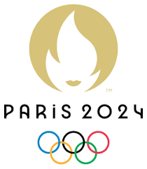

Mattheus Franco Alves
(19) 99557-5494
(19) 99557-5494mattheusfa@mpc.com.br

As Olimpíadas surgiram na Grécia Antiga, por volta de 776 a. C., na cidade de Olímpia. Os
Jogos
Olímpicos da Antiguidade estavam associados a rituais religiosos e prestavam homenagens a
deuses gregos,
como Zeus. Após o fim das Olimpíadas antigas, em 393 d.C., os jogos voltariam a ocorrer
somente 1503 anos
depois.